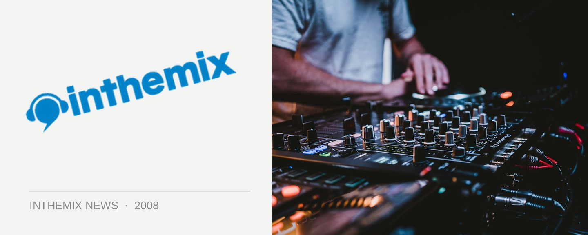

Sosueme bounces back with Team Plastique and Theatre of Disco
The crew from Sosueme will be returning this Friday night, to a comfy new home at Q Bar and they’ll also be hosting two fine indie/electro live acts in the form of Team Plastique and Theatre of Disco. With a bunch of other fine music selectors on board including mashup king Ember along with Hey Now, The Gameboys, Barron Von Hutch, Whatt??, Misc Disc DJs and Mixtape:Mafia. It’ll be continuing Sosueme’s reputation of delivering a night that’s completely genre free… Well, 99 per cent at least!
First up with the live performances for the evening are Team Plastique, a friendly bunch of Australian expats now located in Berlin, who have flown home for a brief sojourn and a performance at Sosueme, their only Australian show. And on the local front, Theatre of Disco will be bringing their unique take on the indie/electro vibe. Signings to the ultra cool and underground Future Classic label, they bring a different (and hugely refreshing) take on the sound that’s so well known form the Modular stable with acts like Cut Copy, Van She and The Prests.
Sosueme hits Q Bar this Friday night, with a $12 entry fee all night. To warm you up, check out this clip of headliners Team Plastique!